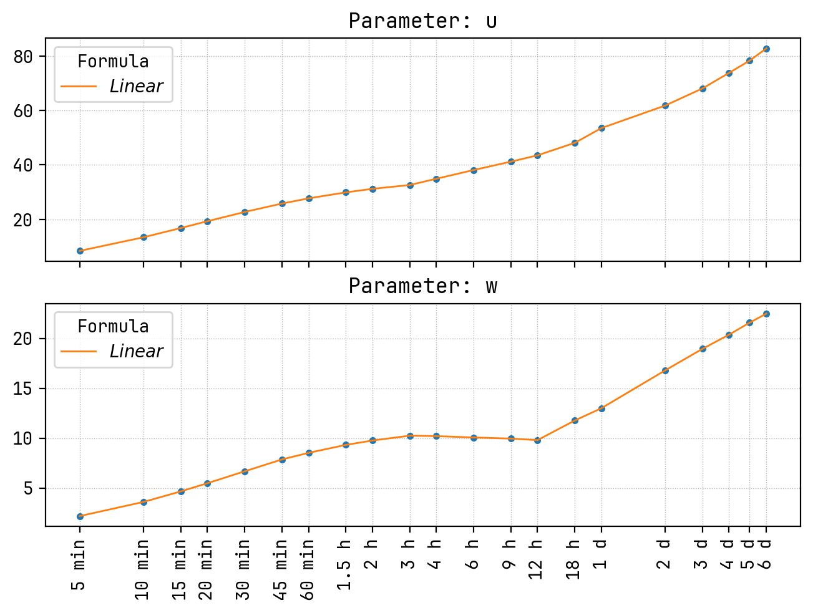
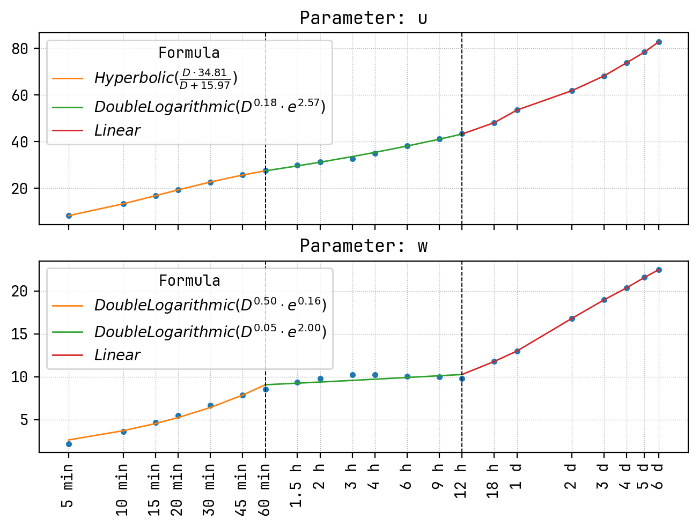
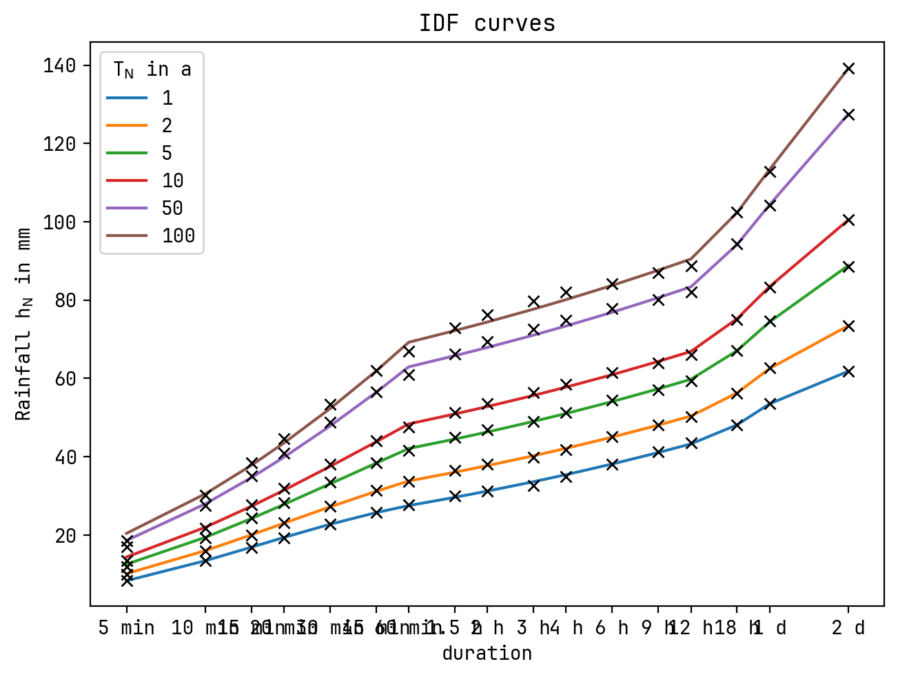

[1]:
from pathlib import Path
import pandas as pd
from idf_analysis import IntensityDurationFrequencyAnalyse
[2]:
location = 'graz'
grid_point_number = 5214
[3]:
output_directory = Path(f'design_rain_ehyd_{grid_point_number}')
output_directory.mkdir(exist_ok=True)
[4]:
fn_idf_ehyd = output_directory / 'design_rain_ehyd_5214.csv'
if fn_idf_ehyd.is_file():
df = pd.read_csv(fn_idf_ehyd, index_col=[0,1])
df = df.rename(columns=int)
df = df.rename(index=int, level=0)
else:
from ehyd_tools.design_rainfall import get_max_calculation_method, get_ehyd_design_rainfall_offline
df = get_ehyd_design_rainfall_offline(grid_point_number, pth='')
# idf_table = get_max_calculation_method(df)
df
[4]:
| 1 | 2 | 3 | 5 | 10 | 20 | 25 | 30 | 50 | 75 | 100 | ||
|---|---|---|---|---|---|---|---|---|---|---|---|---|
| duration | calculation method | |||||||||||
| 5 | MaxModN | 8.8 | 10.4 | 11.7 | 13.4 | 15.8 | 18.2 | 18.9 | 19.6 | 21.3 | 22.7 | 23.7 |
| Bemessung | 8.6 | 10.2 | 11.3 | 12.7 | 14.7 | 16.7 | 17.4 | 18.0 | 19.4 | 20.6 | 21.4 | |
| ÖKOSTRA | 8.4 | 9.9 | 10.8 | 11.9 | 13.4 | 14.9 | 15.5 | 15.9 | 17.0 | 17.9 | 18.5 | |
| 10 | MaxModN | 14.0 | 16.6 | 18.2 | 20.2 | 24.7 | 29.1 | 30.5 | 31.7 | 35.0 | 37.6 | 39.4 |
| Bemessung | 13.7 | 16.3 | 17.8 | 19.7 | 23.3 | 26.8 | 27.8 | 28.8 | 31.4 | 33.5 | 35.0 | |
| ... | ... | ... | ... | ... | ... | ... | ... | ... | ... | ... | ... | ... |
| 7200 | Bemessung | 84.7 | 106.4 | 119.6 | 136.1 | 159.0 | 181.4 | 189.1 | 194.7 | 211.6 | 224.8 | 233.8 |
| ÖKOSTRA | 78.3 | 93.6 | 102.2 | 112.9 | 128.3 | 142.7 | 148.2 | 151.6 | 162.9 | 171.5 | 177.0 | |
| 8640 | MaxModN | 96.4 | 123.1 | 141.3 | 164.3 | 195.4 | 226.6 | 236.6 | 244.9 | 267.8 | 286.1 | 299.0 |
| Bemessung | 89.6 | 110.8 | 124.4 | 141.8 | 164.9 | 188.6 | 195.9 | 201.9 | 219.2 | 232.9 | 242.9 | |
| ÖKOSTRA | 82.8 | 98.4 | 107.4 | 119.2 | 134.4 | 150.6 | 155.2 | 158.8 | 170.6 | 179.6 | 186.8 |
63 rows × 11 columns
[5]:
idf_table = df.xs('ÖKOSTRA', axis=0, level='calculation method', drop_level=True)
idf_table
[5]:
| 1 | 2 | 3 | 5 | 10 | 20 | 25 | 30 | 50 | 75 | 100 | |
|---|---|---|---|---|---|---|---|---|---|---|---|
| duration | |||||||||||
| 5 | 8.4 | 9.9 | 10.8 | 11.9 | 13.4 | 14.9 | 15.5 | 15.9 | 17.0 | 17.9 | 18.5 |
| 10 | 13.4 | 15.9 | 17.3 | 19.2 | 21.7 | 24.3 | 24.9 | 25.6 | 27.5 | 29.1 | 30.1 |
| 15 | 16.8 | 20.0 | 21.9 | 24.3 | 27.6 | 30.7 | 31.8 | 32.7 | 35.0 | 37.0 | 38.4 |
| 20 | 19.3 | 23.1 | 25.3 | 28.2 | 31.9 | 35.8 | 36.9 | 37.9 | 40.8 | 43.0 | 44.6 |
| 30 | 22.7 | 27.3 | 30.0 | 33.5 | 38.1 | 42.7 | 44.3 | 45.5 | 48.8 | 51.5 | 53.4 |
| 45 | 25.8 | 31.3 | 34.5 | 38.4 | 44.0 | 49.4 | 51.2 | 52.7 | 56.6 | 59.7 | 62.0 |
| 60 | 27.7 | 33.6 | 37.1 | 41.5 | 47.5 | 53.2 | 55.3 | 56.8 | 61.0 | 64.4 | 66.9 |
| 90 | 29.9 | 36.4 | 40.2 | 45.0 | 51.3 | 57.8 | 60.0 | 61.7 | 66.2 | 70.2 | 72.9 |
| 120 | 31.2 | 38.0 | 41.8 | 46.8 | 53.6 | 60.3 | 62.5 | 64.3 | 69.4 | 73.6 | 76.3 |
| 180 | 32.6 | 39.8 | 43.8 | 49.0 | 56.3 | 63.3 | 65.6 | 67.4 | 72.6 | 77.0 | 79.8 |
| 240 | 34.9 | 41.8 | 46.1 | 51.2 | 58.5 | 65.4 | 67.8 | 69.6 | 74.9 | 78.7 | 82.1 |
| 360 | 38.1 | 45.1 | 49.1 | 54.4 | 61.4 | 68.1 | 70.4 | 72.6 | 77.8 | 81.5 | 84.2 |
| 540 | 41.2 | 48.1 | 52.0 | 57.0 | 64.0 | 70.7 | 73.5 | 75.2 | 80.2 | 84.3 | 87.0 |
| 720 | 43.5 | 50.2 | 54.2 | 59.4 | 66.0 | 73.0 | 75.1 | 76.7 | 82.1 | 85.5 | 88.8 |
| 1080 | 48.1 | 56.1 | 61.0 | 67.1 | 75.0 | 83.6 | 85.9 | 88.2 | 94.3 | 98.7 | 102.4 |
| 1440 | 53.5 | 62.7 | 68.1 | 74.6 | 83.3 | 92.6 | 95.7 | 97.4 | 104.3 | 109.9 | 112.9 |
| 2880 | 61.8 | 73.4 | 80.2 | 88.6 | 100.6 | 111.9 | 115.4 | 119.0 | 127.5 | 134.6 | 139.3 |
| 4320 | 68.1 | 81.2 | 89.2 | 98.6 | 112.0 | 124.8 | 128.6 | 132.6 | 142.5 | 150.1 | 155.2 |
| 5760 | 73.8 | 87.8 | 95.9 | 106.7 | 120.4 | 135.0 | 139.2 | 143.4 | 153.0 | 162.3 | 167.5 |
| 7200 | 78.3 | 93.6 | 102.2 | 112.9 | 128.3 | 142.7 | 148.2 | 151.6 | 162.9 | 171.5 | 177.0 |
| 8640 | 82.8 | 98.4 | 107.4 | 119.2 | 134.4 | 150.6 | 155.2 | 158.8 | 170.6 | 179.6 | 186.8 |
[6]:
idf_reverse = IntensityDurationFrequencyAnalyse.from_idf_table(idf_table, linear_interpolation=True)
[7]:
fig = idf_reverse.parameters.interim_plot_parameters()

[8]:
max_duration = 2880
fig, ax = idf_reverse.curve_figure(color=True, logx=True, max_duration=max_duration, duration_steps_ticks=True)
ax = idf_table.loc[:max_duration, [1, 2, 5, 10, 50, 100]].plot(ax=ax, marker='x', lw=0, color='black', legend=False)
[9]:
idf_reverse = IntensityDurationFrequencyAnalyse.from_idf_table(idf_table, linear_interpolation=False)
[10]:
fig = idf_reverse.parameters.interim_plot_parameters()

[11]:
max_duration = 2880
fig, ax = idf_reverse.curve_figure(color=True, logx=True, max_duration=max_duration, duration_steps_ticks=True)
ax = idf_table.loc[:max_duration, [1, 2, 5, 10, 50, 100]].plot(ax=ax, marker='x', lw=0, color='black', legend=False)
